Demo to use the Stretcher object
Table of content
Modules and parameters.
- Case 1: Find the best stretching between a reference and another signal.1.1. Step 1: Generate the reference and stretched signals.1.2. Step 2: Pre-compute the stretched versions of the reference.1.3. Step 3: Correlation of the observed signal with the reference.
- Case 2 : Find the stretching history in a b-scan using a single reference.2.1. Step 1: Generate a b-scan with varying stretching as a function of time.2.2. Step 2: Pre-compute the stretched versions of the reference.2.3. Step 3: Correlate all signals of the bscan with the reference.
Case 3 : Find the stretching history in a b-scan without any reference. [experimental]
Case 4 : Iterative approach : Inverse-stretching
Modules and parameters
Modules
[1]:
import time
import numpy as np
import matplotlib.pyplot as plt
from coodddaaaa.stretching import Stretcher
from coodddaaaa.utils import Timer, polyspace
from coodddaaaa.butter import BandpassFilter
from coodddaaaa.utils import TukeyWindow
Parameters
[2]:
# ============ SAMPLING
t0 = -1e-5 # start time in sec
dt = 1e-6 # sampling interval, sec
nt = 512 # number of samples in time
time_array = t0 + np.arange(nt) * dt # seconds (NEVER use np.linspace for time vectors)
# ============ TIME WINDOW
tmin = 1e-4 # begin of time window in sec
tmax = 4e-4 # end of time window in sec
taper_start = tmin-0.1*(tmax-tmin) # start of the Tukey taper window
taper_end = tmax+0.1*(tmax-tmin) # end of the Tukey taper window
# ============ FREQUENCY
fnyquist = 0.5 / dt # Hz
fmin = 0.1 * fnyquist # lower freq Hz
fmax = 0.5 * fnyquist # upper freq Hz
# ============ STRETCHING (epsilon)
eps_true = 0.00123456789 # the imposed stretching coeff to be recovered
# Stretching search grid
eps_search_min = -0.01 # min epsilon value (= -1% stretching)
eps_search_max = +0.01 # max epsilon value (= +1% stretching)
n_eps = 100 # number of epsilon values to test
eps_pw = 1.2 # controls the distribution of epsiolon values in the grid, 1 means linear spacing of the eps grid, > 1 means polynomial distribution of the grid
noise_level = 0.5 # level of noise added to the signal
interp_kind = "fourier" # or 'linear', 'cubic'
[3]:
# create the time taper
win = TukeyWindow(taper_start, tmin, tmax, taper_end)
taper: np.ndarray = win(time_array)
# and the callable bandpass filter
bandpass: callable = BandpassFilter(freqmin=fmin, freqmax=fmax, order=4, sampling_rate=1./dt)
Case 1 : Find the best stretching between a reference and another signal
Step1 : Generate the reference and stretched signals
[4]:
# Build the reference band-pass / tapered coda
y_reference = np.random.randn(nt) # white Gaussian noise
y_reference = bandpass(y_reference, zerophase=True) # bandpass
y_reference *= taper # apply the Tukey taper
[5]:
# Build the observed signal, a stretched version of it + noise
# stretcher0 is used to generate a stretched signal (norm=False),
# do not use it for stretching-based correlation below
stretcher0 = Stretcher(t0=t0, nt=nt, dt=dt, eps=np.array([eps_true]), norm=False)
# get the signal stretched by eps_true,
y_observed = stretcher0.stretch(y_reference)
# there is only one trace here (i.e. one row in y_observed),
# because stretcher0.eps has only one item
y_observed = y_observed[0, :]
# add noise in the bandwidth only
y_observed += bandpass(np.random.randn(nt) * noise_level) * taper
[6]:
# Display
plt.figure(figsize=(10, 3))
plt.plot(time_array, y_reference, label="reference")
plt.plot(time_array, y_observed, label="observed");
plt.gca().legend();
plt.gca().grid(True)
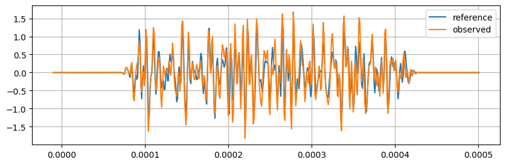
Step2 : Pre-compute the stretched versions of the reference
[7]:
# Build the stretching basis of the reference signal
# epsilon search grid
# polyspace let you increase the grid resolution near eps=0, pwr=1 means linear scale
eps_search = polyspace(
xmin=eps_search_min,
xmax=eps_search_max,
nx=n_eps,
pwr=eps_pw)
# Build the stretcher object for correlation this time (norm=True)
# (do not use stretcher0 which is not normalized)
# Most costly operations are performed here, once for all
with Timer('Build the stretcher object'):
stretcher = Stretcher(
t0=t0, nt=nt, dt=dt,
eps=eps_search,
norm=True,
interp_kind=interp_kind)
with Timer('Compute the stretched reference basis'):
y_reference_stretched = stretcher.stretch(y_reference)
Timer[Build the stretcher object]: 599.53 ms
Timer[Compute the stretched reference basis]: 8.54 ms
[8]:
# Display
fig = plt.figure(figsize=(10, 6))
ax = fig.add_subplot(111, xlabel='Time (s)', ylabel='$ \epsilon $')
ax.pcolormesh(
stretcher.t,
stretcher.eps,
y_reference_stretched,
shading="auto");
# show the epsilon grid as ticks on yaxis
ax.plot(eps_search * 0, eps_search, "k_");
ax.set_title(r'$t \mapsto y^{ref}(t (1 + \epsilon)) $')
bx = ax.twinx()
bx.set_ylim(np.asarray(ax.get_ylim())*100.)
bx.set_ylabel(r'Stretching [%]');
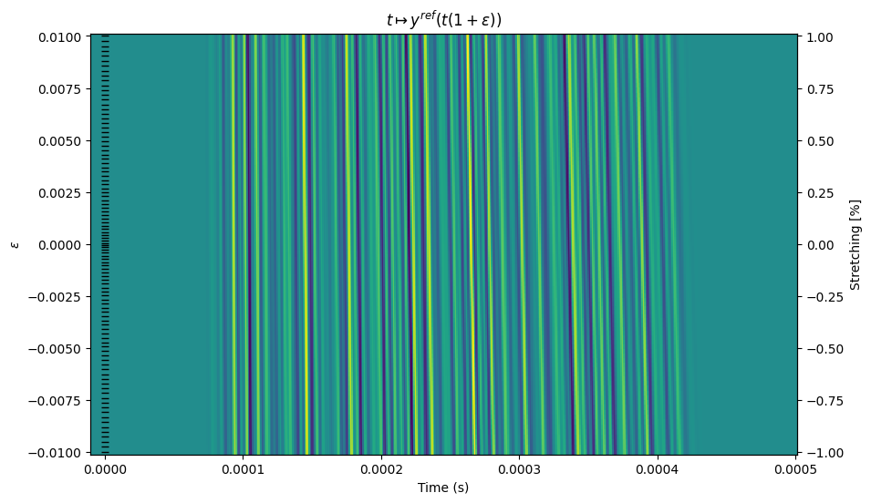
Step 3: Correlation of the observed signal with the reference
[9]:
# Correlate observed with reference
with Timer('Normalized correlation'):
c = stretcher.corr(y_observed, y_reference_stretched) # correlation function, 1d, shape (neps, )
with Timer('Find the max of correlation with subsamp precision'):
eps_max, c_max = stretcher.corrmax(c) # 2 floats
with Timer('Compute Uncertainty'):
eps_unc = stretcher.stretching_uncertainty(
c_max, fmin=fmin, fmax=fmax, tmin=tmin, tmax=tmax) # float
Timer[Normalized correlation]: 0.27 ms
Timer[Find the max of correlation with subsamp precision]: 0.12 ms
Timer[Compute Uncertainty]: 0.03 ms
Results
[10]:
print(f"expected stretching: {eps_true=}")
print(f"obtained stretching: {eps_max=}")
print(f"estimated stretching uncertainty: {eps_unc=}")
print(f"normalized correlation coefficient: {c_max=}")
expected stretching: eps_true=0.00123456789
obtained stretching: eps_max=0.00139463230689957
estimated stretching uncertainty: eps_unc=0.0001274350616099737
normalized correlation coefficient: c_max=0.898521654975452
[11]:
# Display
fig = plt.figure(figsize=(10, 3))
gs = fig.add_gridspec(1, 4)
ax1 = plt.subplot(gs[0, 0], xlabel=r"$ X(\epsilon) $", ylabel="$ \epsilon = \mathrm{d}v/v = -\mathrm{d}t/t $")
ax2 = plt.subplot(gs[0, 1:], sharey=ax1, xlabel="time (s)", ylabel="stretched reference")
ax1.plot(c, stretcher.eps, '+-')
ax1.grid(True, linestyle=":")
ax1.plot(c_max, eps_max, "r*")
ax1.plot([c_max, c_max], [eps_max-eps_unc, eps_max+eps_unc], "r_-")
ax1.plot(ax1.get_xlim(), [eps_max, eps_max], 'r--')
ax2.pcolormesh(stretcher.t, stretcher.eps, y_reference_stretched, shading="auto");
ax2.plot(time_array, 0.0005 * y_observed / np.std(y_observed) + eps_max, 'k', label="$ y^{obs} $")
ax2.grid(True, linestyle=":")
plt.legend();
bx = ax2.twinx()
bx.set_ylim(np.asarray(ax2.get_ylim())*100.)
bx.set_ylabel(r'Stretching [%]');
plt.setp(ax2.get_yticklabels(), visible=False);
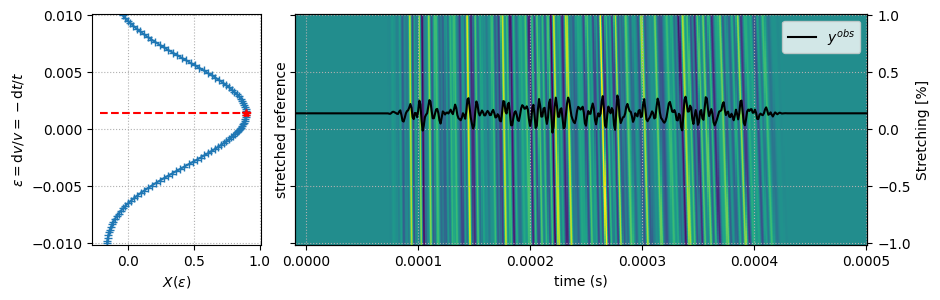
[12]:
# ZOOM IN
ax = plt.subplot(111, xlabel=r"$ X(\epsilon) $", ylabel=r"$ \epsilon = \mathrm{d}v/v $", title='Zoom')
ax.plot(c, stretcher.eps, '+-')
ax.grid(True, linestyle=":")
ax.plot(ax1.get_xlim(), [eps_true, eps_true], 'g-', label="True eps")
ax.plot(c_max, eps_max, "r*")
ax.plot(ax1.get_xlim(), [eps_max, eps_max], 'r--', label="Estimated eps")
ax.plot([c_max, c_max], [eps_max-eps_unc, eps_max+eps_unc], "r_-", label="Estimated Uncertainty")
ax.set_xlim((c_max - 0.05, c_max + 0.05))
ax.set_ylim((eps_max - 5 * eps_unc, eps_max + 5 * eps_unc))
ax.legend();
bx = ax.twinx()
bx.set_ylim(np.asarray(ax.get_ylim())*100.)
bx.set_ylabel(r'Stretching [%]');
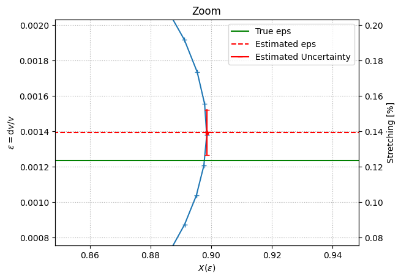
Case 2 : Find the stretching history in a b-scan using a single reference
Step 1 : Generate a b-scan with varying stretching as a function of time
[13]:
# Genereate a synthetic stretching history
n_traces = 256 # number of traces
eps_history = np.linspace(0., 0.002, n_traces)
eps_history += 0.0003 * np.sin(2. * np.pi * np.arange(n_traces) / 150)
x = (np.arange(n_traces)-n_traces//2) / 20.
eps_history += -0.0009 * np.exp(-x) * (x > 0)
[14]:
plt.figure(figsize=(10, 3))
ax = plt.subplot(111, ylabel='True $ \epsilon $', xlabel='Trace num.')
ax.plot(eps_history)
ax.grid(True)
bx = ax.twinx()
bx.set_ylim(np.asarray(ax.get_ylim())*100.)
bx.set_ylabel(r'Stretching [%]');
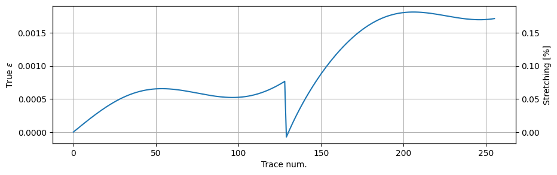
[15]:
# Build the synthetic bscan by stretching the reference, add noise
with Timer('Build the stretcher to generate the bscan'):
stretcher0 = Stretcher(nt=nt, dt=dt, t0=t0, eps=eps_history, norm=False, interp_kind=interp_kind)
ascan = bandpass(np.random.randn(n_traces, nt)) * taper
with Timer('Generate the bscan'):
bscan = stretcher0.stretch(ascan)
bscan += bandpass(np.random.randn(n_traces, nt) * noise_level)
bscan *= taper
# bscan[:n_traces//3] += bandpass(np.random.randn(n_traces//3,nt) * noise_level * 4.)
Timer[Build the stretcher to generate the bscan]: 1579.54 ms
Timer[Generate the bscan]: 679.18 ms
[16]:
# Display
fig = plt.figure(figsize=(10, 6))
gs = fig.add_gridspec(1, 6)
ax1 = plt.subplot(gs[0, 0], xlabel=r"$ \epsilon = \mathrm{d}t/t $", ylabel="Trace Num.")
ax2 = plt.subplot(gs[0, 1:-1], sharey=ax1, xlabel="time (s)", title="Observed bscan")
ax3 = plt.subplot(gs[0, -1], sharey=ax1, xlabel="time (s)", title="Zoom")
ax1.plot(eps_history, np.arange(n_traces), '-')
ax2.pcolormesh(stretcher.t, np.arange(n_traces), bscan, shading="auto");
ax3.pcolormesh(stretcher.t, np.arange(n_traces), bscan, shading="auto");
xmin, xmax = tmin + 0.8 * (tmax - tmin), tmin + 0.84 * (tmax - tmin)
ax2.fill_betweenx(ax2.get_ylim(), [xmin, xmin], [xmax, xmax], color="none", edgecolor="r")
ax3.set_xlim(xmin, xmax)
for ax in [ax2, ax3]:
plt.setp(ax.get_yticklabels(), visible=False)
for ax in [ax1, ax2, ax3]:
plt.setp(ax.get_xticklabels(), ha="left", rotation=-25)
ax.grid(True, linestyle=":")
bx = ax1.twiny()
bx.set_xlim(np.asarray(ax1.get_xlim())*100.)
bx.set_xlabel(r'Stretching [%]');
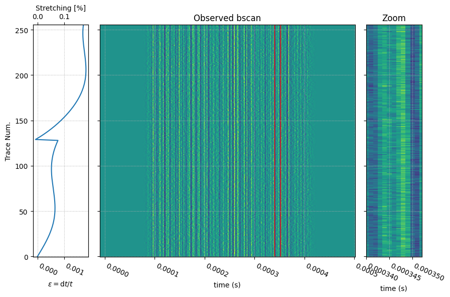
Step 2 : Pre-compute the stretched versions of the reference.
[17]:
# Choose a reference signal in the bscan (first trace)
i_reference = 0
y_reference = bscan[i_reference, :] # so that the reference also includes noise
assert eps_history[i_reference] == 0.
[18]:
# Build the stretching basis of the reference signal
# epsilon search grid
eps_search = polyspace(
xmin=eps_search_min,
xmax=eps_search_max,
nx=n_eps,
pwr=eps_pw)
# for correlation this time (do not use stretcher0)
with Timer('Build the stretcher object'):
stretcher = Stretcher(t0=t0, nt=nt, dt=dt, eps=eps_search, norm=True, interp_kind=interp_kind)
with Timer('Compute the stretched reference basis'):
y_reference_stretched = stretcher.stretch(y_reference) # compute the stretching basis of the reference
Timer[Build the stretcher object]: 600.43 ms
Timer[Compute the stretched reference basis]: 8.44 ms
[19]:
# Display (same as above)
if False:
plt.figure(figsize=(10, 6))
plt.gca().set_xlabel('time (s)')
plt.gca().set_ylabel('$ \epsilon $')
plt.pcolormesh(stretcher.t, stretcher.eps, y_reference_stretched, shading="auto");
plt.gca().plot(eps_search * 0, eps_search, "k_"); # show the epsilon grid as ticks on yaxis
Step 3 : Correlate all signals of the bscan with the reference
[20]:
# Correlate all traces to the reference
with Timer(f'Correlate and find maxima in a bscan of {n_traces} traces with a single reference'):
c = stretcher.corr(bscan, y_reference_stretched)
eps_max_history, c_max_history = stretcher.corrmax(c)
eps_unc_history = stretcher.stretching_uncertainty(
cmax=c_max_history, fmin=fmin, fmax=fmax, tmin=tmin, tmax=tmax)
Timer[Correlate and find maxima in a bscan of 256 traces with a single reference]: 16.09 ms
[21]:
# Display
plt.figure(figsize=(10, 6))
ax1=plt.subplot(211, ylabel="$ \epsilon = \mathrm{d}v/v $")
ax1.plot(np.arange(n_traces), eps_history, label="True epsilon")
hdl, = ax1.plot(np.arange(n_traces), eps_max_history, label="Estimated epsilon")
ax1.fill_between(
x=np.arange(n_traces),
y1=eps_max_history-eps_unc_history,
y2=eps_max_history+eps_unc_history,
color=hdl.get_color(), alpha=0.3,
label="Estimated uncertainty")
ax1.legend()
ax1.grid(True, linestyle=":")
ax2 = plt.subplot(212, sharex=plt.gca(), ylabel="$ X(\epsilon) $", xlabel="Trace Num.")
ax2.plot(np.arange(n_traces), c_max_history);
ax2.set_ylim(0., 1.)
ax2.grid(True, linestyle=":")
bx = ax1.twinx()
bx.set_ylim(np.asarray(ax1.get_ylim())*100.)
bx.set_ylabel(r'Stretching [%]');
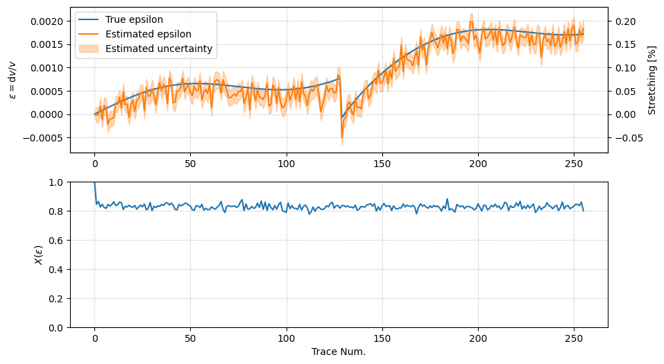
[22]:
# Display the full correlation function to track possible cycle skip effects when the stretching is
# very strong relative to the time period in the late coda part
plt.figure(figsize=(10, 4))
ax1 = plt.subplot(111, ylabel="$ \epsilon = \mathrm{d}v/v $", xlabel="Trace Num.")
coll = ax1.pcolormesh(
np.arange(n_traces), stretcher.eps, c, shading="auto",
vmin=-1.0, vmax=1.0,
cmap=plt.get_cmap('RdGy'))
plt.colorbar(coll, pad=0.12, label="Correlation Coeff.")
ax1.plot(np.arange(n_traces), eps_history, label="True epsilon")
hdl, = ax1.plot(np.arange(n_traces), eps_max_history, label="Estimated epsilon")
ax1.fill_between(
x=np.arange(n_traces),
y1=eps_max_history-eps_unc_history,
y2=eps_max_history+eps_unc_history,
color=hdl.get_color(), alpha=0.3,
label="Estimated uncertainty")
ax1.legend()
ax1.grid(True, linestyle=":")
bx = ax1.twinx()
bx.set_ylim(np.asarray(ax1.get_ylim())*100.)
bx.set_ylabel(r'Stretching [%]');
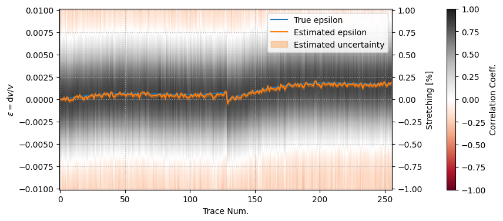
Case 3 : Find the stretching history in a b-scan without any reference
(under development): The approach is similar to Brenguier et al., 2014 (supp. mat.) except that we consider that solving a least square inverse problem is not necessary to infer the stretching history from the cross-stretching matrix as the problem is well posed.
The stretching coefficient matrix gives the best stretching coefficient for each pair of times \(Ti,Tj\)
The correlation coefficient matrix is the maximum of the normalized stretching correlation for each pair of times \(Ti,Tj\)
If the source is stable in time, the signals at calendar times $ T_i $ and $ T_j $ are two stretched version of the same reference $ u_0 $, thus
Then, one can show that
As the auto-stretching-correlation of \(u_0\) peaks at \(\varepsilon=0\), then
The zero-mean stretching history can be obtained by averaging vertically (or horizontally) the stretching matrix :
One can improve this averaging by weighting the stretching measurements by the correlation coefficients (no Einstein summation)
where $ :nbsphinx-math:`gamma `$ is a power coefficient used to increase the weight of the best fitting pairs of correlation functions
Compute the stretching and correlation matrices
[23]:
with Timer('Correlate all pairs of traces in the bscan'):
c_triu, e_triu = stretcher.corr_all_with_all(bscan)
# convert to square arrays
c2d = stretcher.triu2dense(c_triu, symetric=True, diag=1)
e2d = stretcher.triu2dense(e_triu, symetric=False, diag=0)
Timer[Correlate all pairs of traces in the bscan]: 4395.92 ms
[24]:
# Display
plt.figure(figsize=(10, 4))
plt.subplot(121, title="$ C=argmax ( X(\epsilon) ) $", xlabel="Trace Num.", ylabel="Trace Num.")
plt.colorbar(
plt.imshow(c2d,
vmin=0., vmax=1.0,
cmap=plt.get_cmap('viridis')))
plt.subplot(122, title="$ \epsilon = \mathrm{d}v/v $", xlabel="Trace Num.", ylabel="Trace Num.")
plt.colorbar(
plt.imshow(
e2d,
vmin=-np.abs(e2d).max(),
vmax=+np.abs(e2d).max(),
cmap=plt.get_cmap('RdBu'))
);
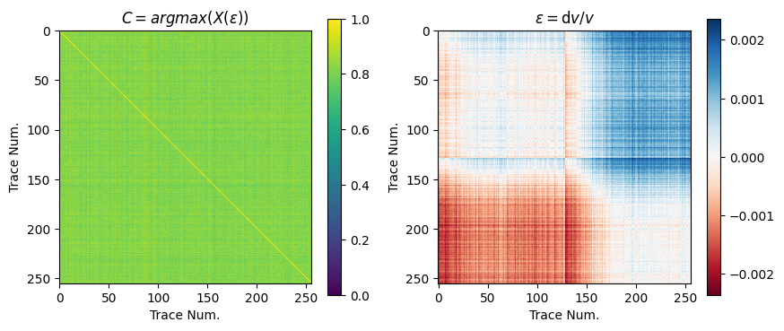
[25]:
# recover the stretching history
eps_mean_history = (e2d - e2d.mean(axis=1)[:, np.newaxis]).mean(axis=0)
eps_std_history = np.std(e2d - e2d.mean(axis=1)[:, np.newaxis], axis=0)
plt.figure(figsize=(10, 3))
ax1 = plt.subplot(111, xlabel="Trace Num.", ylabel=r"$ \epsilon = \mathrm{d}v/v $")
ax1.plot(eps_history - eps_history.mean(), label=r"$ \mathrm{True}\,\epsilon - < \mathrm{True}\,\epsilon > $")
# replot single reference version
hdl, = ax1.plot(eps_max_history - eps_max_history.mean(), label="Single reference")
ax1.fill_between(
x=np.arange(len(eps_max_history)),
y1=eps_max_history- eps_max_history.mean()-eps_unc_history ,
y2=eps_max_history- eps_max_history.mean()+eps_unc_history ,
color=hdl.get_color(), alpha=0.3, label="Estimated uncertainty (single ref)")
# add results for this section
hdl, = ax1.plot(eps_mean_history, label="No reference (mean)")
#hdl, = plt.plot(emed, label="No reference (median)")
ax1.fill_between(
x=np.arange(len(eps_mean_history)),
y1=eps_mean_history-eps_std_history,
y2=eps_mean_history+eps_std_history,
color=hdl.get_color(),
alpha=0.3, label="Statistical uncertainty (no ref)")
ax1.legend();
ax1.set_ylim(-0.002, 0.002)
ax1.grid(True);
bx = ax1.twinx()
bx.set_ylim(np.asarray(ax1.get_ylim())*100.)
bx.set_ylabel(r'Stretching [%]');
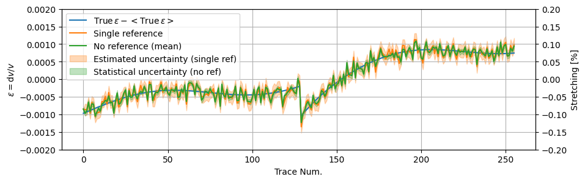
Case 4 : Iterative approach : Inverse stretching
We first evaluate the reference signal by taking the average of the bscan
The stretching history is estimated as usual, by correlation with the reference
Then the bscan is corrected from the estimated stretching history (i.e. de-stretched) and averaged again to refine the estimate of the reference. The process can be iterated until the energy of the reference converges.
[26]:
# Genereate a synthetic stretching history
n_traces = 1024 # number of traces
eps_history = np.linspace(0., 0.002, n_traces)
eps_history += 0.0003 * np.sin(2. * np.pi * np.arange(n_traces) / 150)
x = (np.arange(n_traces)-n_traces*2//3) / 20.
eps_history += -0.002 * np.exp(-x) * (x > 0)
eps_history *= 20 # simulate huge stretching rates
[27]:
# Build the synthetic bscan by stretching the reference, add noise
stretcher0 = Stretcher(nt=nt, dt=dt, t0=t0, eps=eps_history, norm=False, interp_kind=interp_kind)
ascan = bandpass(np.random.randn(nt)) * taper
bscan = stretcher0.stretch(ascan)
bscan += bandpass(np.random.randn(n_traces, nt) * noise_level)
bscan[:n_traces//3] += bandpass(np.random.randn(n_traces//3,nt) * noise_level * 4.)
bscan *= taper
[28]:
# Display
fig = plt.figure(figsize=(10, 6))
gs = fig.add_gridspec(1, 6)
ax1 = plt.subplot(gs[0, 0], xlabel=r"$ \epsilon = \mathrm{d}v/v $", ylabel="Trace Num.")
ax2 = plt.subplot(gs[0, 1:-1], sharey=ax1, xlabel="time (s)", title="Observed bscan")
ax3 = plt.subplot(gs[0, -1], sharey=ax1, xlabel="time (s)", title="Zoom")
ax1.plot(eps_history, np.arange(n_traces), '-')
ax2.pcolormesh(stretcher.t, np.arange(n_traces), bscan, shading="auto");
ax3.pcolormesh(stretcher.t, np.arange(n_traces), bscan, shading="auto");
xmin, xmax = tmin + 0.8 * (tmax - tmin), tmin + 0.84 * (tmax - tmin)
ax2.fill_betweenx(ax2.get_ylim(), [xmin, xmin], [xmax, xmax], color="none", edgecolor="r")
ax3.set_xlim(xmin, xmax)
for ax in [ax2, ax3]:
plt.setp(ax.get_yticklabels(), visible=False)
for ax in [ax1, ax2, ax3]:
plt.setp(ax.get_xticklabels(), ha="left", rotation=-25)
ax.grid(True, linestyle=":")
bx = ax1.twiny()
bx.set_xlim(np.asarray(ax1.get_xlim())*100.)
bx.set_xlabel(r'Stretching [%]');
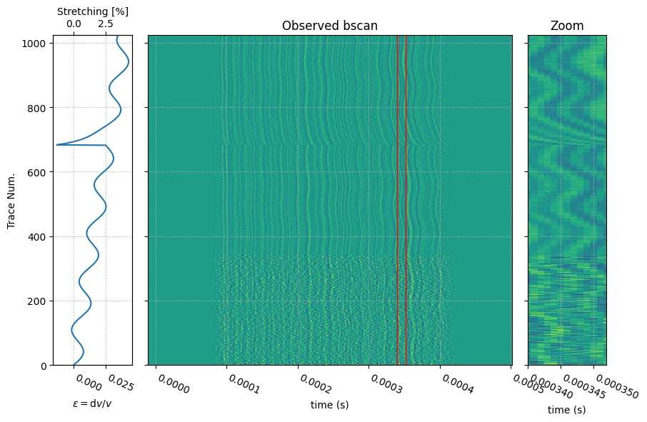
[29]:
# Build the stretching basis of the reference signal
eps_search = polyspace(eps_search_min * 10, eps_search_max * 10, n_eps * 4, eps_pw)
stretcher = Stretcher(nt=nt, dt=dt, t0=t0, eps=eps_search, norm=True, interp_kind=interp_kind)
[30]:
# Take the average bscan as reference to start the process
y_reference = bscan.mean(axis=0) # the reference might not be optimal if some traces are bad
[31]:
from coodddaaaa.stretching import InverseStretcher
fig = plt.figure(figsize=(10, 9))
gs = fig.add_gridspec(3, 4)
ax1 = fig.add_subplot(gs[0, :-1], ylabel="#iteration", xlabel="Time (s)", title="reference signal")
bx1 = fig.add_subplot(gs[0, -1], sharey=ax1, title="convergence")
ax2 = fig.add_subplot(gs[1, :], ylabel=r"$ \epsilon = \mathrm{d}v/v $", xlabel="Trace num.")
#ax3 = ax2.twinx(); ax3.set_ylabel("Corr. Coeff")
ax3 = fig.add_subplot(gs[2, :], ylabel=r"$ Corr. Coeff $", xlabel="Trace num.", sharex=ax2)
for _ in range(5):
hdl, = ax1.plot(time_array, y_reference + _, label=f"iter #{_:1d}")
bx1.plot((y_reference ** 2.0).sum(), _, "s", color=hdl.get_color())
# compute the stretching basis of the current version of the reference
y_reference_stretched = stretcher.stretch(y_reference)
# correlate the bscan with it
c = stretcher.corr(bscan, y_reference_stretched)
eps_max_history, c_max_history = stretcher.corrmax(c)
ax2.plot(eps_max_history, label=f"iter #{_:1d}", color=hdl.get_color())
ax3.plot(c_max_history, "-", label=f"iter #{_:1d}", color=hdl.get_color())
# cancel the observed stretching history
# the inverse stretched must be reset at each iteration because
# it is only valid for a given stretching history
inverse_stretcher = InverseStretcher(
nt=nt, dt=dt, t0=t0,
eps_history=eps_max_history,
interp_kind="linear", # only linear here !!
)
bscan_corrected = inverse_stretcher(bscan)
# average the un-stretched bscan to get the new estimate of the reference
if False:
# the new reference is the simple average of the unstretched bscan
y_reference = bscan_corrected.mean(axis=0)
else:
# the new reference is the weighted average of the unstretched bscan, using the stretching correl. coeff.
y_reference = (c_max_history[:, np.newaxis] * bscan_corrected).sum(axis=0) / c_max_history.sum()
# TODO : weight the average by the correlation coeff of each trace
ax2.legend(loc="best")
[31]:
<matplotlib.legend.Legend at 0x14b0341ef6d0>
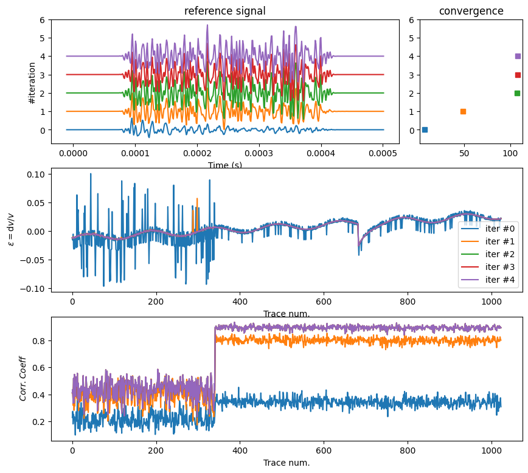
[32]:
# The corrected bscan should be aligned correctly
plt.gcf().subplots_adjust(hspace=0.3)
plt.subplot(211, title="input bscan", ylabel="Trace num.")
plt.pcolormesh(stretcher.t, np.arange(n_traces), bscan, shading="auto")
plt.subplot(212, sharex=plt.gca(), sharey=plt.gca(), title="final unstretched bscan", ylabel="Trace num.")
plt.pcolormesh(stretcher.t, np.arange(n_traces), bscan_corrected, shading="auto");
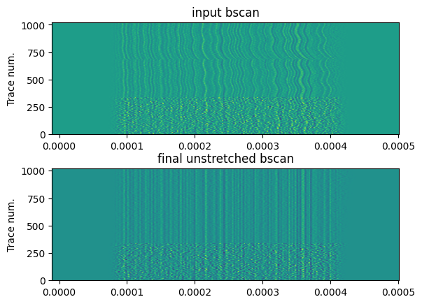